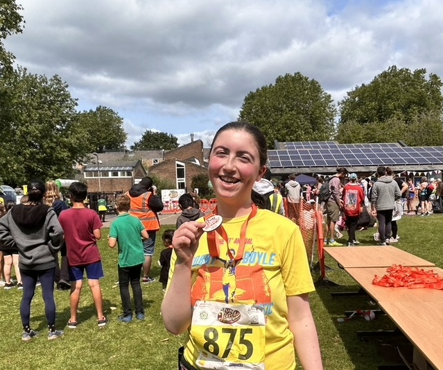

Check In #2
How I Got Started
I began running in middle school, with my mom’s encouragement, as a way to exercise and bond with her. We’d do local 5ks together and I began to dip my toes into running. I continued running intermittently throughout high school and became more serious after graduating. In college, running has been a great outlet for me and provided a balance with my academics. I’ve recently struggled with injuries, but am starting to find my love for running again!
Honorary Mention: The Boston Marathon
I grew up along the route of the Boston Marathon and my mom was a frequent participant in the race. I remember watching the race each year, cheering her on and feeling so proud. The Marathon was a chance for all of our neighbors to come out and cheer for world class athletes and normal runners alike, creating an unparalleled communal experience. Someday, I’d love to be a runner whom they’re cheering for.
Races I've Done

- Jerusalem Half Marathon
- Daffodil 10K
- Western Mass 10 Miler
- Oxford Jericho 10K
My Fav Running Influencers
- Adam and Mica Wood (opens in new window)
- Conner Mantz (opens in a new window)
- Linda Sunyt (opens in a new window)
Important Running Lingo
PR
PR's stand for personal record, a runner's fastest time at a certain distance. PB is an alternate term that stands for personal best.
BQ
BQ stands for a Boston Qualifier, meaning a marathon time which qualifies a runner for the Boston Marathon. The Boston Marathon is unique because it is a world major marathon and, unlike other world majors, it relies almost exclusively on qualifying times. A BQ is generally regarded as a significant accomplishment.
Splits
Splits refer to the time in which a runner completes a specified smaller segment of a larger distance.
Zones
Zones refer to a runner's HR zone, ranging from Zone 1 to Zone 5. Zone 1 indicates a low HR, typically for easy runs at a conversational pace. Zone 5 is a when a runner is at their maximum HR, typically during an all out run for speed.